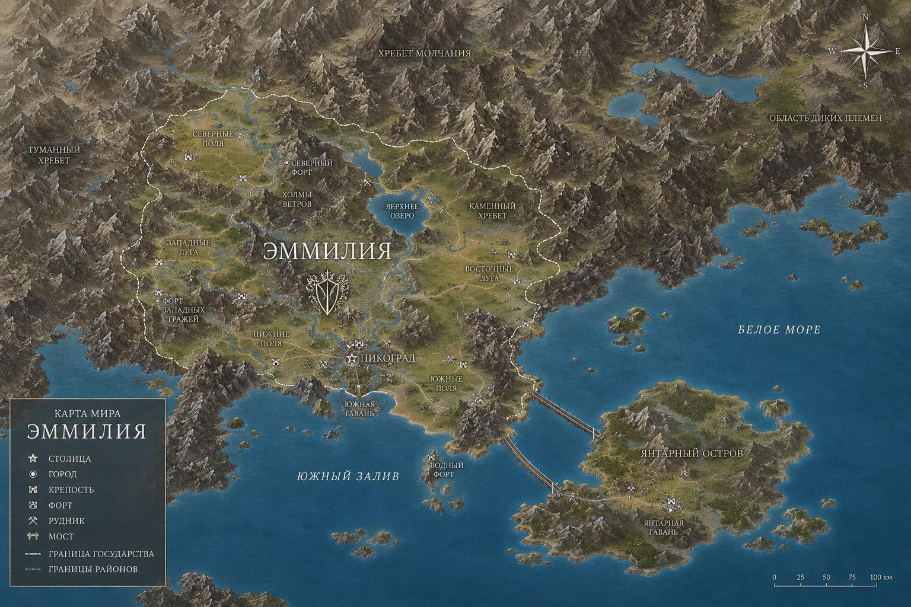
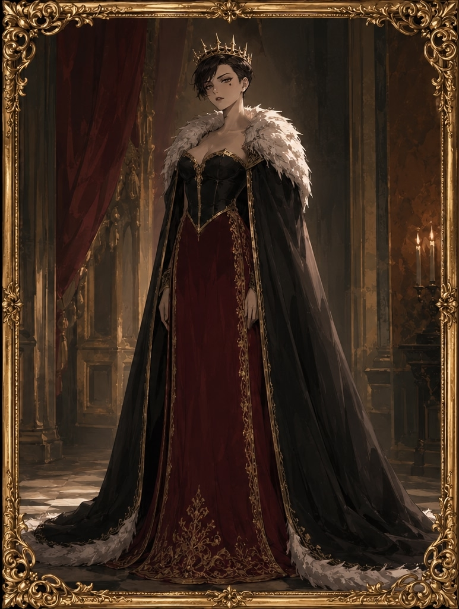

Правитель: Эмма Пиковая

Территория Эммилии с провинциями, городами и ключевыми объектами.
Промышленный комплекс Эммилии базируется на трёх столпах: горнодобывающая отрасль (основа экономики, обусловленная горным рельефом), обрабатывающие производства (металлургия, ювелирное дело, картоделие) и высокотехнологичный сектор (IT, точное приборостроение, оптика). Суммарная численность занятых в промышленности: 6,2 миллиона человек (включая смежные отрасли). Доля промышленности в ВВП: 48%.
Ключевая особенность эммилийской промышленности — вертикальная интеграция: от добычи сырья в шахтах до выпуска готовой высокотехнологичной продукции. Это позволяет удерживать добавленную стоимость внутри страны и не зависеть от внешних переработчиков.
Горнодобывающий сектор — исторически первая и крупнейшая отрасль Эммилии. Горный массив Великих Пиковых Гор пронизан сетью шахт, штолен и карьеров общей протяжённостью свыше 12 000 километров. Глубина отдельных выработок достигает 2,5 километров.
Основные месторождения:
— Чёрная Жила (Пиковая провинция): крупнейшее месторождение железа и марганца на континенте. Разведанные запасы: 4,2 миллиарда тонн руды. Добыча открытым и шахтным способом. Годовая производительность: 85 миллионов тонн.
— Медный Пояс (Трефовая провинция): медь, никель, кобальт. Запасы меди: 1,8 миллиарда тонн. Попутно добывается серебро (до 300 тонн в год) и платиноиды.
— Вольфрамовый Пик (Червонная провинция): вольфрам, молибден, редкоземельные металлы. Стратегическое месторождение, дающее 60% всей редкоземельной продукции континента.
— Золотые Террасы (Бубновая провинция): рассыпное и коренное золото. Ежегодная добыча: 45 тонн чистого золота. Здесь же добывается платина (12 тонн в год).
— Янтарный Берег (анклав): единственное в мире месторождение чёрного жемчуга промышленного значения. Добыча ведётся как с морского дна (глубинные фермы), так и в прибрежных пещерах. Годовая добыча: 15 тонн отборного жемчуга.
Главное предприятие отрасли — государственная корпорация «Блеск Пик». Штат: 3 миллиона человек. Включает 47 шахт, 12 обогатительных комбинатов, 8 плавильных заводов, собственную железнодорожную сеть и портовый терминал на Янтарном Берегу. Годовая выручка: 8,5 миллиарда пиков.
Металлургический комплекс Эммилии перерабатывает практически весь добываемый металл внутри страны. Ключевые предприятия:
Пикоградский металлургический комбинат (ПМК) — крупнейший на континенте производитель стали и проката. 12 доменных печей, мартеновский и конвертерный цеха. Производит: броневую сталь для военной техники, рельсы, строительный прокат, трубный металл. Штат: 85 000 человек.
Завод точных сплавов «Вольфрам-Пик» — производит жаропрочные и титановые сплавы для авиации, космической отрасли и медицинского оборудования. Штат: 25 000 человек.
Медно-серебряный завод (Трефовая провинция) — полный цикл от руды до катанки и серебряных слитков. Попутно производит серную кислоту для химической промышленности. Штат: 30 000 человек.
Ювелирный кластер «Пик-Шик» — объединяет 120 мастерских и 3 фабрики по обработке драгоценных металлов, огранке чёрного жемчуга и производству ювелирных изделий. Экспортная продукция класса «люкс». Штат: 15 000 мастеров-ювелиров.
Уникальная отрасль, составляющая культурное достояние Эммилии. Производство игральных карт — не просто бизнес, а государственное искусство, охраняемое патентом Короны с 1601 года.
Центр картоделия — Гильдия Картоделов в Пикограде. Каждая колода проходит 47 этапов ручной работы: от отбора древесины для бумажной основы (используется только чёрное дерево aged 50+ лет) до тиснения чёрным золотом и нанесения защитных голограмм.
Производственная мощность: до 50 000 колод в год (стандартные) и до 1 000 колод коллекционного уровня. Одна коллекционная колода может стоить до 50 000 пиков. Среди заказчиков — королевские дворы, музеи и частные коллекционеры.
Главное предприятие: «Колоды Эммилии» (королевский патент). Штат: 20 500 мастеров, включая 300 потомственных картоделов, чьи семьи занимаются ремеслом более 400 лет.
Самый молодой, но стремительно растущий сектор. Эммилия сделала ставку на криптографию и кибербезопасность, превратив горную изолированность в преимущество: дата-центры расположены в бывших шахтах на глубине до 500 метров, что обеспечивает физическую защиту и естественное охлаждение.
«Пик-Тек» — государственный IT-гигант. Основные продукты: шифровальные протоколы «Пик-Крипто» (используются банками 15 государств), система защищённой связи «Чёрный Канал», операционная система «SpadeOS» для государственных учреждений. Штат: 800 000 сотрудников (включая удалённых).
Дата-центры «Пик-Тек»: 12 подземных ЦОДов суммарной мощностью 2,5 гигаватта. Охлаждение — естественное (горные воды). Уровень отказоустойчивости: 99,999%.
Помимо «Пик-Тек», в стране работает технопарк «Кремниевая Штольня» — 350 стартапов в области искусственного интеллекта, робототехники и квантовых вычислений. Государство предоставляет резидентам налоговые каникулы до 5 лет.
Вопреки стереотипам о горной стране, Эммилия обладает развитым текстильным сектором. Горные склоны на высотах от 800 до 1800 метров идеально подходят для выпаса пикийской длинношёрстной овцы — местной породы, дающей шерсть исключительного качества (тонина 14–18 микрон, длина волокна до 25 см).
Поголовье овец: 12 миллионов голов. Ежегодный настриг: 60 000 тонн шерсти. Крупнейшие предприятия: «Пик-Шерсть» (первичная обработка и пряжа, штат 50 000 человек) и текстильный комбинат «Ткани Эммилии» (производство тканей, в том числе церемониальных, штат 35 000 человек).
Особая гордость — «Пиковое сукно», ткань из шерсти с вплетением волокон чёрного жемчуга. Используется для пошива мантий Совета Мастей и парадных мундиров Гвардии Правителя. Производится ограниченными партиями (до 200 метров в год).
Энергетический комплекс Эммилии — комбинированный. Собственная добыча нефти и газа покрывает 75% потребностей. Недостающие 25% импортируются. Основные месторождения: нефтяное «Чёрный Грифон» (Бубновая провинция, 12 млн тонн в год), газовое «Горный Факел» (Пиковая провинция, 8 млрд кубометров в год).
Активно развивается возобновляемая энергетика. Ветряные фермы на горных перевалах (установленная мощность 4,5 ГВт) используют постоянные ветра ущелий. Геотермальные станции в районе вулканического плато дают ещё 1,2 ГВт. К 2035 году планируется выйти на полную энергетическую самообеспеченность.
Горный рельеф диктует особый подход к логистике. Основа транспортной системы — Эммилийская Горная Железная Дорога (ЭГЖД): 8 500 километров путей, включая 340 тоннелей и 180 мостов. Электрифицирована на 90%. Связывает все шахты, заводы и порт Янтарного Берега.
Порт «Янтарные Ворота» — единственный морской порт Эммилии, через который проходит 70% экспорта. Оборудован терминалами для навалочных грузов (руда, уголь), контейнерным терминалом и специальным жемчужным доком с климат-контролем.
Аэропорт «Пикоград-Международный» обслуживает грузовые и пассажирские перевозки. Построен на искусственном плато на высоте 1200 метров. Две взлётно-посадочные полосы, способные принимать все типы воздушных судов.
Несмотря на мощный промышленный сектор, Эммилия придерживается жёстких экологических норм. Все плавильные заводы оснащены многоступенчатыми фильтрами. Отвалы горных пород рекультивируются: на них высаживается пикийская сосна, восстанавливающая ландшафт за 15–20 лет.
Добыча чёрного жемчуга ведётся без ущерба экосистеме Янтарного Берега. Квоты на добычу устанавливаются ежегодно Советом по Экологии. Заповедные земли полностью изъяты из промышленного использования.
Нарушение экологических норм карается штрафом до 500 000 пиков и приостановкой лицензии на срок до 5 лет.
Общий объём государственной казны Эммилии составляет 27,47 миллиарда пиков (по состоянию на текущий фискальный год). Из них: золотой запас — 3,8 тонны чистого золота (хранится в подземном хранилище под Пикоградом), резервный фонд — 920 миллионов, бюджет развития — 850 миллионов, стабилизационный фонд — 400 миллионов, остальное — средства в обороте.
Казначейство Эммилии располагается в здании Чёрного Купола — архитектурного сооружения из обсидиана и стали, построенного в 1678 году. Доступ в хранилище осуществляется по тройному ключу: один у Правителя, второй у Главы Совета, третий у Верховного Казначея.
Денежная единица Эммилии — Пик (международный код: PIK, символ: ♠). Один пик делится на 100 шипов. Чеканка монет и печать банкнот осуществляются исключительно Центральным Банком Эммилии на Пикоградском Монетном Дворе.
Номиналы монет: 1 шип (медный сплав с чернением), 5 шипов (бронза), 10 шипов (серебрение), 25 шипов (серебро), 50 шипов (серебро с чернением), 1 пик (биметалл: центр — золото, кольцо — платина).
Номиналы банкнот: 5 пиков (бордовая), 10 пиков (тёмно-зелёная), 25 пиков (тёмно-синяя), 50 пиков (чёрная с золотым тиснением), 100 пиков (чёрная с серебряной голограммой), 500 пиков (ограниченный выпуск, используется для межгосударственных расчётов).
На всех банкнотах изображён портрет действующего Правителя и символ пики. При попытке подделки банкноты проявляется скрытый знак — алая пика, нанесённая кровяными чернилами на основе чёрного жемчуга.
Подделка национальной валюты карается пожизненным заключением в Шахтах Пиковых Гор и конфискацией всего имущества.
Эммилия — признанный экспортёр высокотехнологичной и ремесленной продукции. Основные статьи экспорта:
1. Чёрный жемчуг (15% экспорта). Добывается на Янтарном Берегу. Считается лучшим в мире благодаря уникальному составу воды. Используется в ювелирном деле, медицине и точной оптике. Крупнейшие покупатели: сопредельные государства, Союзные территории. Среднегодовой объём экспорта: 12 тонн обработанного жемчуга.
2. Игральные карты ручной работы (10% экспорта). Эммилийские Колоды — эталон качества. Каждая колода изготавливается мастерами Гильдии Картоделов вручную, с использованием техники тиснения чёрным золотом. Средняя стоимость одной колоды на внешнем рынке: 500–1500 пиков. Коллекционные колоды уходят за 10 000+ пиков.
3. Программное обеспечение и IT-решения (8% экспорта). Эммилийские программисты известны разработкой защищённых систем связи и криптографических алгоритмов. Компания «Пик-Тек» является ведущим поставщиком шифровальных протоколов для банковских систем континента.
4. Ювелирные изделия (20% экспорта). Сочетание чёрного жемчуга, платины и обсидиана создало узнаваемый стиль «Пик-Шик», популярный среди аристократии соседних государств.
5. Чёрное дерево и ремесленные изделия (8% экспорта). Резьба по чёрному дереву — традиционное искусство Пиков. Предметы интерьера, шкатулки, ритуальные маски экспортируются более чем в 20 государств.
6. Образовательные услуги (7% экспорта). Пикоградский Университет Карточных Искусств принимает иностранных студентов по квоте. Обучение платное, стоимость года — от 3000 пиков.
7. Металлы и сырьё (20% импорта). Железная руда, медь, редкоземельные металлы импортируються в большем количестве из-за их обильного месторождения на территории государства.
8. Текстиль и ткани (12% импорта). Шерсть, шёлк и хлопок — эммилийский климат позволяет выращивать текстильные культуры в промышленных масштабах на склонах. Так же нередко используется натуральная шерсть из-за большого количесва голов скота.
Эммилия не является полностью самодостаточной и активно импортирует следующие категории товаров:
1. Продовольствие (55% импорта). В силу горного рельефа и ограниченности пахотных земель Эммилия закупает зерно, фрукты, специи и вина. Основные поставщики: южные аграрные государства и Союзные территории. Ежегодный объём закупок: примерно 500 миллионов пиков.
2. Энергоносители (27% импорта). Нефть и газ импортируются для переработки и обеспечения промышленности. Собственные месторождения покрывают лишь 75% потребностей. Эммилия инвестирует в возобновляемую энергетику: строятся ветряные фермы в Пиковых Горах.
5. Технологическое оборудование (18% импорта). Высокоточные станки, медицинское оборудование и лабораторные приборы закупаются у технологически развитых партнёров.
Среднегодовой объём экспорта: 2,8 миллиарда пиков. Среднегодовой объём импорта: 1,7 миллиарда пиков. Положительное сальдо торгового баланса: +400 миллионов пиков. Эммилия — государство-кредитор, не имеющее внешнего долга. Золотовалютные резервы стабильно растут на 3–5% в год.
Минимальный размер оплаты труда (МРОТ) составляет 1200 пиков в месяц. Прожиточный минимум — 900 пиков. Каждому гражданину гарантируется: бесплатное образование (включая высшее при успешной сдаче экзаменов), базовая медицина, пенсия по достижении 90 лет (размер — 60% от среднего заработка). Пособие по безработице выплачивается в течение 12 месяцев и составляет 700 пиков.
«Блеск Пик» — государственная корпорация по добыче металлов как цветных так и черной. Штат: 3 миллиона работников. Годовая выручка: 8,5 миллиарда пиков.
«Пик-Добыча» — государственная корпорация по добыче и обработке чёрного жемчуга. Штат: 120 000 сотрудников. Годовая выручка: 850 миллионов пиков.
«Колоды Эммилии» — государственная мануфактура по производству игральных карт. Обладает королевским патентом. Штат: 20 500 мастеров. Годовая выручка: 200 миллионов пиков.
«Пик-Тек» — государственная IT-корпорация. Разработка программного обеспечения, криптография, кибербезопасность. Штат: 800 000 сотрудников. Годовая выручка: 500 миллионов пиков.
Центральный Банк Эммилии — эмиссия валюты, контроль финансовой системы. Активы под управлением: более 3 миллиардов пиков.
Эммилия приветствует иностранные инвестиции. Налоговые каникулы до 3 лет для стратегических инвесторов. Защита капитала гарантируется Экономическим кодексом. Приоритетные сектора для инвестиций: возобновляемая энергетика, IT, туризм (открытие Янтарного Берега для иностранных курортов), переработка чёрного жемчуга.
Для открытия бизнеса в Эммилии иностранный гражданин обязан получить инвестиционную визу (порог входа — от 50 000 пиков) и зарегистрировать предприятие в Реестре. Срок регистрации: 5 рабочих дней. Бюрократические барьеры минимальны.
Народ Эммилии именует себя Пиками — по священному символу, что венчает их корону. Согласно древним хроникам, Пики произошли от союза Первого Правителя Пик и Королевы Чёрной Колоды, но после разлома в 10 веке Эммилия отделилась от союза Пикового Короля и Вольта став отдельным государством.
Генотип Пиков уникален и узнаваем среди других стран на континенте. Генетический маркер PKV-1 (Пиковый Вариант-2) обуславливает характерную внешность: угольно-чёрные волосы, никогда не седеющие до белизны, а приобретающие с возрастом оттенок воронова крыла с серебристым отливом, и глаза цвета запёкшейся крови — от тёмно-рубинового до насыщенно-алого. Радужка при ярком свете сужается вертикально, что является эволюционным наследием горных предков.
Кожа Пиков — бледная, с лёгким серовато-оливковым подтоном, устойчивая к холоду. На запястье левой руки у каждого чистокровного Пика присутствует родимое пятно в форме миниатюрной пики — знак принадлежности к народу. Отсутствие знака является основанием для генетической экспертизы при получении гражданства.
Средний рост мужчин: 180–200 см. Средний рост женщин: 170–180 см. Телосложение — сухощавое, жилистое, с удлинёнными пропорциями тела. Пики славятся выносливостью и природной грацией движений.
Продолжительность жизни в среднем составляет 90–110 лет, однако зафиксированы случаи долгожительства до 140 лет среди жрецов Горного Культа. Старение протекает медленно: внешность Пика в 50 лет соответствует примерно 30 годам у обычного человека.
Голосовые связки обладают уникальной особенностью — Пики способны издавать низкое гортанное вибрато, используемое в ритуальных песнопениях и в качестве боевого клича. Этот звук, называемый «кар-рах», упоминается ещё в летописях Первой Эпохи. Однаков в данный момент жители предпочитают использовать более мягкие звуки, что наталкивает на мысль о влиянии из вне, например из стран союзников.
Официальный язык государства — Пиковый (самоназвание: Пикк-Эммах, дословно — «Речь Горной дамы»). Язык относится к изолированной языковой семье, имеющей аналоги среди языковых групп других стран произошедших из союза более ранних Пик.
Особенности: обилие гортанных и шипящих звуков, отсутствие категории грамматического рода, три системы счёта (обычная и военная). Письменность — руническая, знаки высекаются углами, напоминая очертания пик. Алфавит состоит из 33 рун, каждая из которых имеет двоякое бытовое значение.
Примеры фраз: «Кхар-эш-таан» — Ветер несёт ваше здравие (приветствие).
Все официальные документы дублируются на русском, однако знание Пикового языка обязательно для получения гражданства. Экзамен включает тест из 100 вопросов и чтения рун.
Праздник Чёрной Пики. Главный государственный праздник, отмечаемый в день зимнего солнцестояния. В эту ночь зажигают небесные фонарики и запускают в небо, а Правитель вытягивает из Ритуальной Колоды карту, определяющую судьбу государства на грядущий год.
Обряд Совершеннолетия. В 16 лет каждый Пик проходит Испытание Теней — спускается в горную пещеру без света и проводит там ночь. Считается, что в темноте юный Пик встречается лицом к лицу со своим внутренним страхом и побеждает его. Вернувшийся получает право носить родовую руну на одежде.
Кодекс Мастей. Неписаный свод чести: никогда не лгать тому, с кем делил хлеб; не обнажать клинок без нужды; защищать гостя ценой собственной жизни.
Свадебный обряд. Бракосочетание проводится на рассвете. Жених и невеста обмениваются не кольцами, а парными кулонами в форме половин пики, складывающимися в целый символ. Кулон носится всю жизнь, потеря кулона считается дурным предзнаменованием. Так же по недавним сводкам, молодые люди стали завязывать ленты белого цвета на фамильных домах, что стало трендом и обсуждается о принятии новой традиции в Государственном Совете
Пики — народ замкнутый, но не враждебный. Главные черты: стойкость, сдержанность, верность слову и глубокая, почти ритуальная любовь к порядку. Пик никогда не даёт пустых обещаний. Если Пик сказал «я сделаю» — он сделает, даже ценой собственной жизни. Предательство считается худшим из грехов, караемым изгнанием и вычёркиванием имени из всех реестров.
В быту Пики аскетичны: ценят простоту, качество и долговечность. Из искусств наиболее почитаемы резьба по чёрному дереву, ювелирное дело (особенно работа с белым жемчугом) и хоровое пение. Пикийские хоры известны далеко за пределами государства. С появлением союзников молодое поколение стало больше заниматься детализацией домов, что не цениться среди старшего покаления. Однако из-за новой тенденции местные власти начали реканструкцию городов, делая их не только практичными, но и приятными на вид
К чужакам относятся настороженно, но с достоинством. Существует поговорка: «Пик открывает дверь гостю один раз. Войдёт ли гость второй — решает гость». Заслужить доверие Пика трудно, но заслуживший обретает друга навек.
Общая численность: 8,2 миллиона граждан. Из них чистокровных Пиков — около 78%, остальные — натурализованные граждане иных кровей. Основное население сосредоточено в столичном округе Пикоград (3,8 млн) и провинциях. Горные районы заселены слабо, там проживают общины старейшин, следящих за Ритуальной Колодой.

Полное имя: Эмма Пиковая, Верховный Правитель Эммилии, Пиковая Дама.
Возраст: 28 лет.
Рост: 186 см.
Титул: Её Пиковое Величие, Верховный Главнокомандующий Вооружёнными Силами Эммилии, Государына Королевства Эммилия.
Эмма Пиковая известна своей холодностью и сдержанностью. В юности её беспричинный гнев приводил в ужас гувернанток, но с возрастом он сменился ледяным спокойствием. Однако те, кто знает её близко, говорят: если Эмму удаётся вывести из себя — жди беды. В ярости она подобна фурии, но, в отличие от прошлого, теперь бьёт исключительно по фактам, доказательствам и логике, а не на пустых обвинениях. Вывести её из себя намеренно сложно — нужно действительно постараться.
Многие считают её бесчувственной и закрытой. Это не так. С приближёнными и советниками у Эммы тёплые, почти дружеские отношения — она общается с ними на «ты», тогда как они обращаются к ней на «вы». Она благосклонна к жаргону и неформальной речи в своём присутствии, ценя прямоту выше этикета.
К противоположному и своему полу Эмма одинаково безразлична в романтическом плане. Это не принципиальная позиция и не высокомерие — она просто не встретила человека, которого сочла бы достойным. Пара для неё — не вопрос статуса, а вопрос личности.
В повседневной жизни Эмма предпочитает мужскую одежду — простую, удобную, функциональную. На официальных мероприятиях появляется в платьях, но неизменно выбирает не пышные, мало детализированные модели. Из-за этого в обществе её нередко называют «менее женственной» и «мужиковатой». Эмма не обижается. Её ответ неизменен: «Это мой путь».
Она лично посещает казармы Гвардии, независимо от пола солдат, и неоднократно самостоятельно вела учения Королевской Гвардии. Солдаты уважают её не за титул — за то, что она стоит с ними в строю.
Эмма — превосходная наездница. Верховая езда для неё не просто спорт, а способ побыть наедине с собой. Также она мастерски владеет луком — это хобби осталось с детства, и хотя сейчас лук заменили на пистолеты, Эмма до сих пор с удовольствием проводит время на стрельбище. Рукопашный бой — ещё одна её страсть: она тренируется лично и не уступает гвардейцам в спаррингах.
Эмма честно признаётся: она боится пауков. Именно живых. Не шуток, не игрушек, не изображений — живого паука. Если такой внезапно окажется перед ней — Правитель Эммилии отпрыгнет, не задумываясь о статусе. В боевой обстановке этот страх отступает, но в быту — никогда.
Она испытывает отвращение к насекомым в целом — в конце концов, она женщина, хоть и не самая женственная.
Эмма не ест лук. Ни в каком виде, кроме супов. Сырой, обжаренный, кольцами — категорически нет.
Также она не переносит помидоры в сыром виде и особенно томатный сок. Её прямая цитата: «Кто из вас сумасшедший, что любит томатный сок?». При этом томаты в омлете или запеканке — спокойно. Просто помидор — нет.
На шее Эммы — горизонтальный шрам. Это след первого покушения, совершённого, когда она была ещё подростком, задолго до коронации. Она не скрывает его и не стыдится — шрам стал частью её истории.
В прошлом у Эммы был пёс — чёрный самоед, неверный друг и спутник. Он умер от старости. Эмма тяжело переживала потерю, но приняла её с пониманием: так устроена жизнь. Нового питомца с тех пор не заводила.
Статья 1. Эммилия есть суверенное, демократическое, унитарное государство с карточной формой правления. Носителем суверенитета и единственным источником власти является народ Эммилии.
Статья 2. Высшей ценностью государства признаются права и свободы гражданина. Государство гарантирует каждому право на достойную жизнь, свободное развитие и участие в управлении делами государства.
Статья 3. Государственная власть осуществляется на основе разделения на законодательную (Совет Мастей), исполнительную (Кабинет Правителя) и судебную (Верховный Трибунал).
Статья 4. Государственными символами являются: Пиковый Флаг, Герб с Короной и Скипетром, Гимн «Марш Пиковой Дамы». Осквернение символов карается по статье 47 Уголовного кодекса.
Статья 5. Официальный язык — эммилийский. Валюта — пик. Столица — Пикоград. Форма обращения к Правителю — «Ваше Пиковое Величие».
Наказание за нарушение конституционных норм: от крупного штрафа (5000 пиков) до пожизненного лишения гражданства при попытке насильственного свержения строя.
Статья 6. Каждый гражданин имеет право на жизнь, свободу слова, собраний, вероисповедания и выбор профессии. Цензура запрещена, кроме случаев угрозы национальной безопасности.
Статья 7. Граждане имеют право создавать политические партии, общественные объединения и профсоюзы. Запрещены организации, пропагандирующие насилие, расовую или карточную ненависть.
Статья 8. Каждый имеет право на тайну переписки и личной жизни. Прослушка и слежка допускаются только по решению Верховного Трибунала.
Статья 9. Труд свободен. Минимальный размер оплаты труда не может быть ниже прожиточного минимума. Право на забастовку гарантируется.
Статья 10. Граждане обязаны соблюдать законы, платить налоги, бережно относиться к государственному имуществу и защищать Отечество в случае военной угрозы.
Наказание за уклонение от налогов: штраф до 200% от скрытой суммы, при повторном нарушении — конфискация имущества и исправительные работы сроком до 3 лет.
Статья 11. Высшим должностным лицом является Правитель. Правитель избирается всеобщим голосованием сроком на 7 лет. Одно лицо не может занимать пост более двух сроков подряд.
Статья 12. Правитель формирует Кабинет, назначает судей, является Верховным Главнокомандующим, обладает правом помилования и вето на законы Совета Мастей.
Статья 13. Совет Мастей состоит из 54 депутатов (по числу карт в колоде). Избирается на 4 года. Принимает законы, утверждает бюджет, объявляет войну и заключает мир.
Статья 14. Верховный Трибунал — высшая судебная инстанция. 9 судей назначаются Правителем и утверждаются Советом Мастей пожизненно.
Статья 15. Местное самоуправление осуществляется через Городские и Районные Советы.
Статья 1. Гражданином Эммилии признаётся лицо, прошедшее процедуру натурализации и принесшее Присягу на Пиковой Колоде.
Статья 2. Гражданство приобретается: по рождению (если оба родителя — граждане), путём натурализации (ценз оседлости — 1 год), за особые заслуги перед государством (указом Правителя).
Статья 3. Двойное гражданство допускается только с государствами, имеющими Союзный договор с Эммилией.
Статья 4. Процедура вступления в гражданство включает: подачу заявления, проверку на благонадёжность, экзамен на знание законов и уплату пошлины (200 пиков).
Статья 5. Гражданство утрачивается: при добровольном выходе, при осуждении за государственную измену, при длительном (более 5 лет) проживании за границей без уведомления.
Статья 6. Лицо, лишённое гражданства, обязано покинуть территорию Эммилии в течение 30 дней.
Статья 7. Полная гражданская дееспособность наступает с 18 лет. С 16 лет — право на труд и вступление в брак с согласия Совета.
Статья 8. Каждый гражданин обязан зарегистрироваться в Едином Реестре Граждан (ЕРГ).
Наказание за нерегистрацию в ЕРГ: штраф 300 пиков, административный арест до 15 суток.
Статья 9. Брак — добровольный союз двух граждан. Минимальный возраст вступления — 18 лет (16 с разрешения). Развод осуществляется через Трибунал при наличии оснований.
Статья 10. Имущество, нажитое в браке, является совместной собственностью. Брачный договор может установить иной режим.
Статья 1. Экономика Эммилии основана на принципах свободного рынка с элементами государственного регулирования стратегических отраслей.
Статья 2. Стратегическими отраслями признаются: добыча чёрного жемчуга, карточное производство, энергетика, оборона.
Статья 3. Налог на доходы физических лиц — 13%. Налог на прибыль предприятий — 20%. НДС — 10%. Акцизы на предметы роскоши — 30%.
Статья 4. Налоговые каникулы до 2 лет предоставляются новым предприятиям в сфере технологий и искусств.
Статья 5. Уклонение от уплаты налогов наказывается штрафом до 200% от скрытой суммы и лишением лицензии на деятельность.
Статья 6. Центральный Банк Эммилии осуществляет эмиссию пиков, контроль инфляции и надзор за коммерческими банками.
Статья 7. Лицензирование банковской деятельности — обязательно. Подпольные банки караются конфискацией и уголовной ответственностью.
Статья 8. Признаются частная, государственная, муниципальная и коллективная формы собственности.
Статья 9. Национализация возможна только в интересах государственной безопасности и с полной компенсацией рыночной стоимости.
Статья 10. Каждый гражданин имеет право на предпринимательскую деятельность. Лицензированию подлежат: оружие, медицина, образование, игорный бизнес.
Статья 1. Территория Эммилии включает: столичный округ Пикоград, 4 провинции (Червонная, Бубновая, Трефовая, Пиковая), а также анклав Янтарный Берег.
Статья 2. Границы государства устанавливаются международными договорами и наносятся на Генеральную Карту, утверждаемую Советом Мастей.
Статья 3. Земли делятся на: государственные, частные, заповедные и земли специального назначения (военные базы, космодромы).
Статья 4. Заповедные земли (Великие Пиковые Горы, Янтарное Побережье) изъяты из хозяйственного оборота. Нарушение заповедного режима карается штрафом до 10 000 пиков и лишением свободы до 2 лет.
Статья 5. Присоединение новых территорий осуществляется: путём добровольного вхождения (референдум), по договору с другим государством, в результате открытия и заселения необитаемых земель.
Статья 6. Главы провинций назначаются Правителем из числа местных жителей.
Статья 1. Вооружённые Силы Эммилии (ВСЭ) состоят из: Сухопутных войск, Морского флота, Воздушного корпуса и Гвардии Правителя.
Статья 2. Верховным Главнокомандующим является Правитель.
Статья 3. Все граждане мужского пола от 18 до 27 лет подлежат призыву на срочную службу сроком 12 месяцев. Для женщин — служба добровольная.
Статья 4. Отсрочка предоставляется: студентам, единственным кормильцам, по состоянию здоровья (решение медкомиссии).
Наказание за уклонение от призыва: штраф 5000 пиков, исправительные работы до 2 лет, при повторном — лишение свободы до 3 лет.
Статья 5. Звания: рядовой — сержант — лейтенант — капитан — майор — полковник — генерал — маршал. Маршал — высшее звание, присваивается лично Правителем.
Статья 6. Военное положение вводится указом Правителя при внешней агрессии. На время действия ограничиваются некоторые гражданские права (свобода собраний, передвижения).
Статья 7. Присяга: «Я, гражданин Эммилии, клянусь защищать Отечество, хранить верность Правителю и никогда не сдавать карты противнику».
Статья 1. Эммилия проводит политику открытости, нейтралитета и взаимовыгодного сотрудничества. Запрещено вступать в агрессивные военные блоки.
Статья 2. Государство, желающее вступить в Союз, направляет официальную заявку в Министерство Внешних Связей.
Статья 3. Кандидат должен соответствовать требованиям: наличие суверенитета, отсутствие агрессивной политики, признание Конституции Эммилии, готовность подписать Союзный договор.
Статья 4. Союзный договор включает: пункт о взаимной обороне, свободной торговле, культурном обмене и взаимном признании гражданства.
Статья 5. Выход из Союза возможен с предупреждением за 6 месяцев и урегулированием всех обязательств.
Статья 6. Послы и дипломаты обладают неприкосновенностью на территории Эммилии, если не совершили тяжкого преступления.